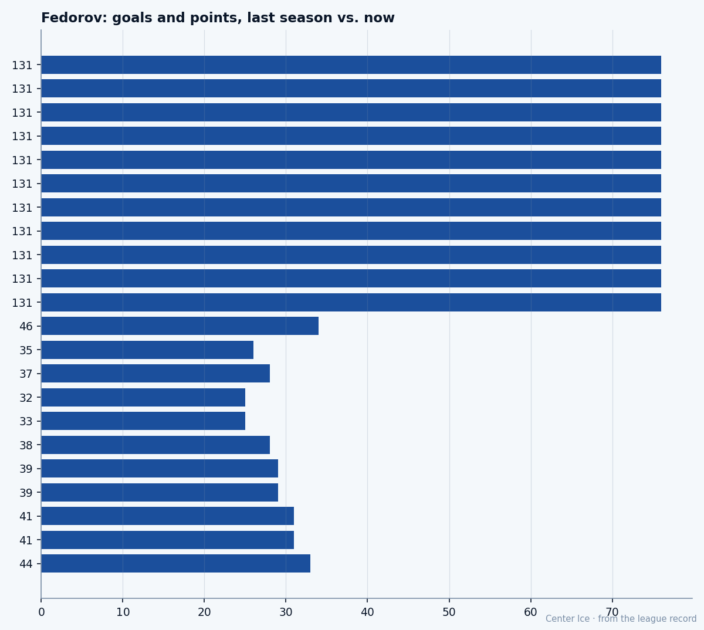

Sergei Fedorov, at 35: what the Book says, what the room says
The goals are up. The assists are gone. The speed is still 98, and that is the whole man.
 Tomáš VránaProfile writer · The Sweater
Tomáš VránaProfile writer · The SweaterHe scored 34 goals in 33 games this season. Last season he scored 76 in 82 and won the Pearson. Those two facts are the lede and the kicker at once, and the story lives in the gap between them, which is 12 assists.
 Sergei Fedorov90 is 35 years old, 5 foot 7, 200 pounds, and he plays center for
Sergei Fedorov90 is 35 years old, 5 foot 7, 200 pounds, and he plays center for  Mighty Ducks of Anaheim, a team sitting 13-12-7 in the Pacific with nothing to do but follow his feet. The Book has him at 90 overall, the base 94 minus one on the Development Index. Morale 94. Speed 98. Shot power 95. Deception 94. The three grades that made him the hardest man to stop in the league in the middle 1990s are still sitting above 94. His fighting grade is 50. His body was never meant for the corners and now it does not go to the corners.
Mighty Ducks of Anaheim, a team sitting 13-12-7 in the Pacific with nothing to do but follow his feet. The Book has him at 90 overall, the base 94 minus one on the Development Index. Morale 94. Speed 98. Shot power 95. Deception 94. The three grades that made him the hardest man to stop in the league in the middle 1990s are still sitting above 94. His fighting grade is 50. His body was never meant for the corners and now it does not go to the corners.
The goals went up. The rest stopped.
Last season: 76 goals, 55 assists, 131 points in 82 games at 21.1 minutes a night. This season: 34 goals, 12 assists, 46 points in 33 games at 22.3 minutes. The goal line barely moves when you adjust for games played. The assist line does not. From 55 passes down to 12, in half the season, on more ice per game.
This is not decline. The goals held. What happened is smaller and stranger: the pass stopped. Fedorov still goes to the net, still beats the defenseman to the spot, still shoots before the gap closes. What he no longer does is hold the puck long enough to find the second man. The game went from three seconds and a dump-in to one second and a shot.

You can read the game plan in the grade sheet. Speed 98 means the first three strides separate him from a defenseman by half a body length. Shot power 95 means the puck beats the goaltender before the pad moves. Deception 94 means the head fakes are still enough to freeze a coverage assignment. None of those three require a teammate. They require a lane and a net, and Fedorov finds a lane because he is the fastest thing on the ice at 35, and he shoots because the window closes in less time than a pass would need.
His weakest grade is fighting at 50, next to injury at 51. This was never a man who finished checks, and now at 200 pounds in his 36th year, no coach asks him to. The ask is one thing: get to the slot before anyone else does.
Portland, then Detroit, then this
The Bureau's draft record says 1989, 74th overall, third round. The letter inside the Red Wings media guide reached a 19-year-old in Moscow that August. By July 1990 the Soviet national team came to Portland for the Goodwill Games, and Fedorov walked away from a scheduled exhibition at the Memorial Coliseum and into a Detroit sweater that would take a decade to earn.
He won the Hart in 1994. He won the Selke in 1996 with 107 points while playing defensively. He scored five goals against Washington on December 26, 1996, all of Detroit's in a 5-4 overtime win, and led the Wings to Cups in 1997 and 1998. He signed a Carolina offer sheet worth up to $38 million in 1998 with a $12 million clause that triggered only if his team made the conference finals, a structure designed to punish Detroit for being Detroit. They matched it.
Gretzky said in 1994 that he had never seen a player dominate the game the way Sergei did. That was the peak. This is the afternoon.
What Giguere says
"Sergei, he sees things, he's been doing this a long time, and the speed he has, even now, it's something. The first goal he scores tonight, he's already there before the D know he's there."
That was  Jean-Sebastien Giguere97, his goaltender, told to The Tunnel's Marcus Bell after a 5-4 home win over San Jose on December 18. Fedorov was not the story of that night. Giguere was, in a loss. But when the goaltender was asked about cushion and his team's best player, the answer was Fedorov's feet. "When your best player puts three up, that's the cushion you need on a night like mine."
Jean-Sebastien Giguere97, his goaltender, told to The Tunnel's Marcus Bell after a 5-4 home win over San Jose on December 18. Fedorov was not the story of that night. Giguere was, in a loss. But when the goaltender was asked about cushion and his team's best player, the answer was Fedorov's feet. "When your best player puts three up, that's the cushion you need on a night like mine."
Giguere is the Ducks' best player by the Book, graded 97. Fedorov at 90 is the second name on the roster. The gap between the two grades is seven points. The gap in what they give the team is one save and one goal, which is a hockey game.
The contract and the clock
$6.30M a year. Four years left. The math is on the sheet: Sergei Fedorov will be 39 when this contract runs out. The Book will not hold at 90 through four more seasons at 35. The Development Index has him one below base right now, and that one has a way of becoming two, then three.
But today the grade says speed 98. Today the line says 34 goals in 33. Today Anaheim is a team that plays its oldest player 22.3 minutes a night because there is no one else who crosses the blue line at that first-step rate, and when he crosses it the puck goes in or it doesn't, and the 34 tells you the answer is more often than not.
The road from Pskov went through Portland, through Detroit, through a Hart, a Selke, two Cups, a five-goal game on Boxing Day, a $38 million offer sheet, a holdout, and somewhere across the continental record into this building where a 35-year-old Russian center takes a 30-second shift and scores his 34th goal before the opposition's defenseman realizes he's been beaten.
The game got smaller. The player got faster, relatively. The Book says so. The room says so.